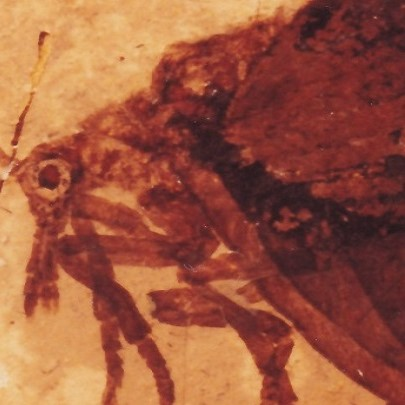
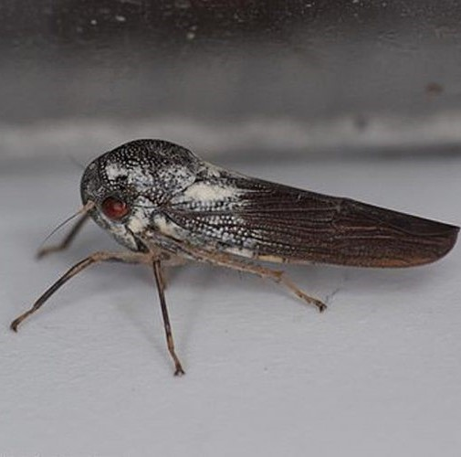
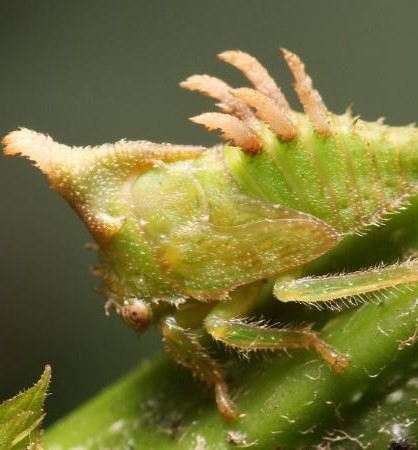

Un equipo de investigadores ha descrito los fósiles de mosquito más antiguos hallados jamás. Se trata de dos insectos macho del Cretácico Inferior que presentan unas piezas bucales punzantes, lo que sugiere que probablemente se alimentaban de la sangre. Ambos mosquitos, hallados en el yacimiento de ámbar libanés (el más antiguo del mundo, de unos 150 millones de años), se describen en un artículo en la revista *Current Biology*.
Fecha: 4 de Diciembre del 2023 18:03.jpeg)
La disminución de insectos se debe a la agricultura intensiva, pesticidas y urbanización. Más del 40% de las especies está en peligro de extinción, amenazando la polinización y la limpieza del suelo. Su desaparición sería el sexto evento de extinción, afectando gravemente los ecosistemas.Los insectos son vitales para la polinización, limpieza del suelo y la cadena alimentaria. La economía también depende de ellos, con la industria de la miel y los insectos comestibles. Para salvarlos, se sugiere plantar flores, controlar pesticidas y restaurar áreas naturales.
Fecha: 18 de Noviembre del 2023 9:34
